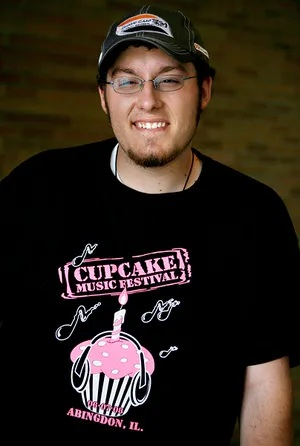

Bobbi Paulus knew Drew Fitch for a long time before the two started dating in March.
That was right around the time Fitch started organizing the Cupcake Music Festival.
"I'm just using Drew for Cupcake. I've always wanted to date a promoter," Paulus joked Thursday afternoon. "Seriously, I don't know how he does it without going nuts.
"He's always running errands and talking to people when we go out."
Paulus won't have to compete for very long. The 12-hour benefit for the American Cancer Society starts at noon Saturday on Abingdon's Main Street and will feature 13 bands playing everything from folk and classic rock to heavy metal and western music.
Fitch said he had no way of knowing the scope of responsibilities associated with preparing for a benefit.
"We thought we would just block off part of Main Street in Abingdon and let the bands set up and play," Fitch said. "There were so many things we never thought about — the logistics of Main Street, security, liability and the safety of our visitors.
"That's just the beginning. You have vendors and band issues. Band issues were huge. A lot of bands that contacted us in April broke up in May."
Fitch was still running last-minute errands Thursday.
"The music festival has turned out to have a bigger impact on my family and friends than I thought it would," he said. "I think I've kind of put them through hell.
"But it has been rewarding, too. The festival is for cancer research and so many people have contacted us to talk about cancer has touched their lives."
The gates to the festival open at 8 a.m. Parking is available in the American Legion parking lot and the fair grounds. Shuttle buses may be available for those who want to park and ride to Main Street.
Organizers are asking for a $5 donation at the gate. All gate proceeds will be donated to the American Cancer Society.
- What: Cupcake Music Festival
- Where: Main Street, Abingdon
- When: Gates open at 8 a.m. Saturday. The music starts at noon.
- Who: Bands performing include Dolly Llamas, A Hollywood Ending, Chew Toy, Lethal by Default, Definition by Aggression, Mad-Town Metal, Far From Free, Fierce Amateurs, Post Mortem, Mindefect and Stress Fracture.
- Donations: $5 at the gate.
- For more information: www.myspace.com/cupcakemusicfestival2008.